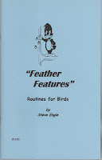
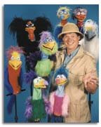

Feather Features
3/28/2009
{kind=link}

"Feather Features" by Steve Engle contains 8 routines for bird puppets: My Standard Routine, Special Song Intros, Bird Song, Love Birds, A Cold In The Beak, The Messenger Corps, Limp Feathers, and The Ventriloquist. Delightful comedy! The author has this to say about his reason for writing this book:
"My buzzard puppet has been the most popular in my troupe for more than a dozen years. Though a lot of it is "attitude", I'd be lost without much of the material here. I've collected these lines from many sources - some are actually original! - and put them together in routines that have worked well for me. Feel free to pick, choose, and compile your own combinations." Steve Engle 09/2000
Feather Features is always available from the Maher Bookstore and is also available as one of my current eBay auctions (ending Monday). Click here to see them all.
"My buzzard puppet has been the most popular in my troupe for more than a dozen years. Though a lot of it is "attitude", I'd be lost without much of the material here. I've collected these lines from many sources - some are actually original! - and put them together in routines that have worked well for me. Feel free to pick, choose, and compile your own combinations." Steve Engle 09/2000
Feather Features is always available from the Maher Bookstore and is also available as one of my current eBay auctions (ending Monday). Click here to see them all.
{kind=link}

Looking for a quality bird puppet? I've personally used the several of the Axtell birds and recommend them highly: Bird Puppets by Axtell (No that's not me in the photo left - that's the master bird creator/trainer himself - Steve Axtell)